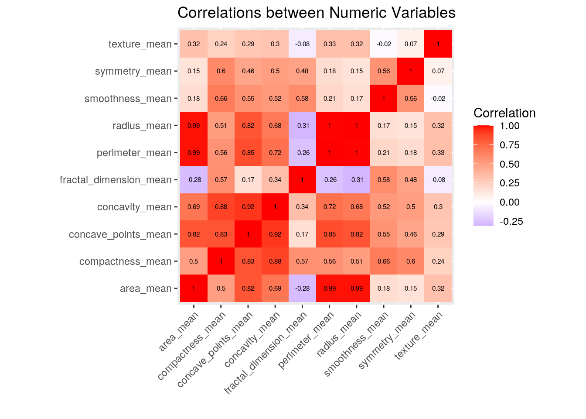
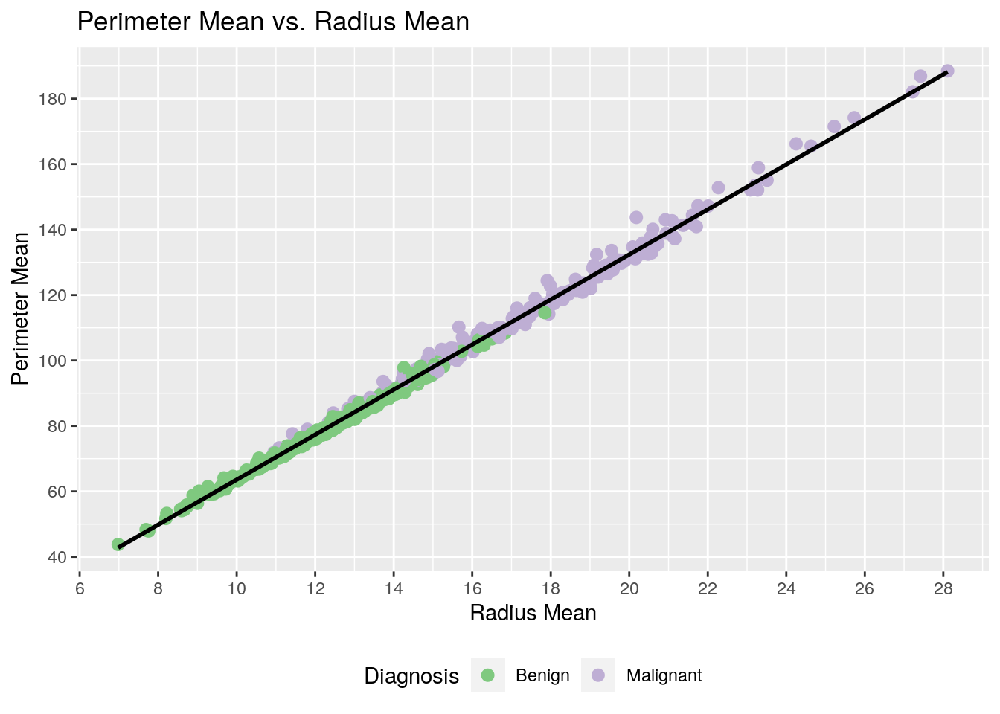
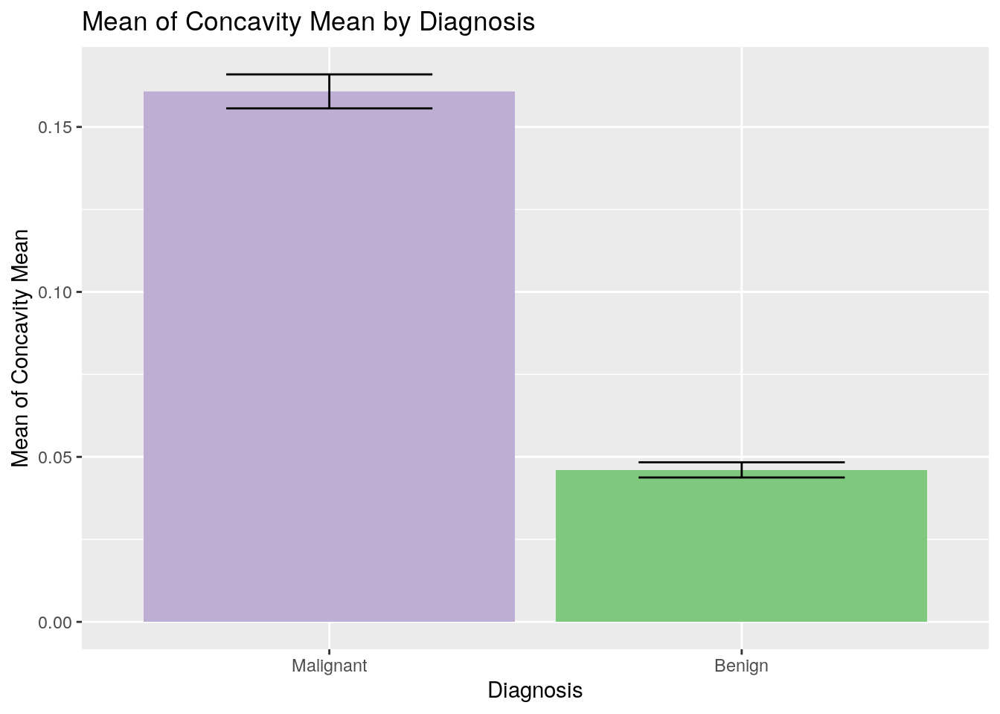
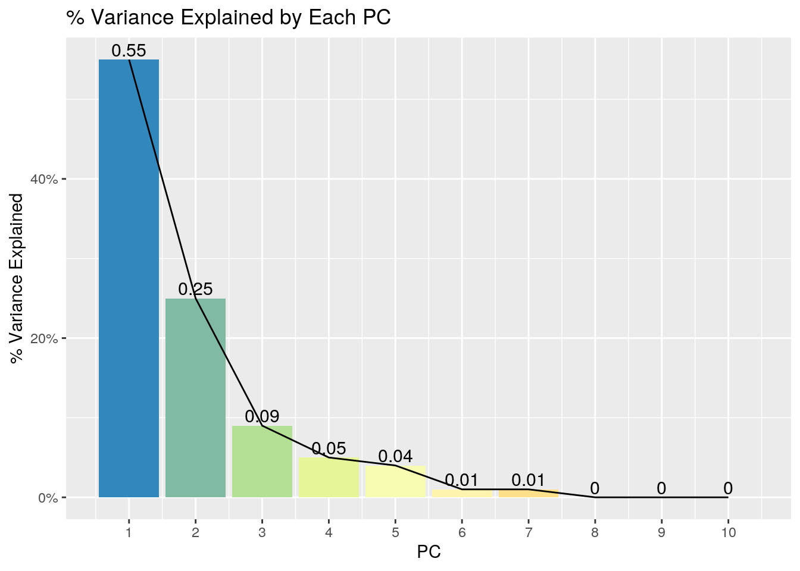
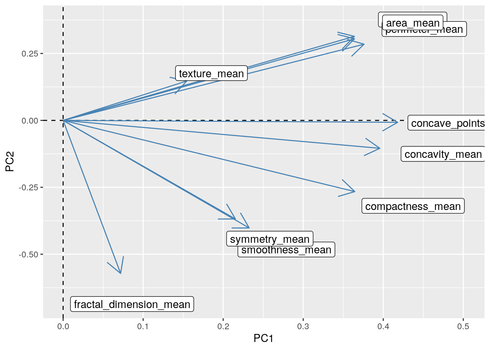
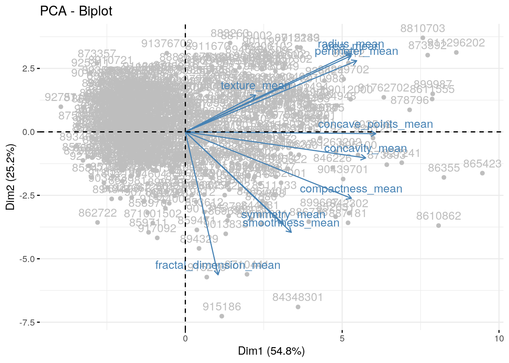
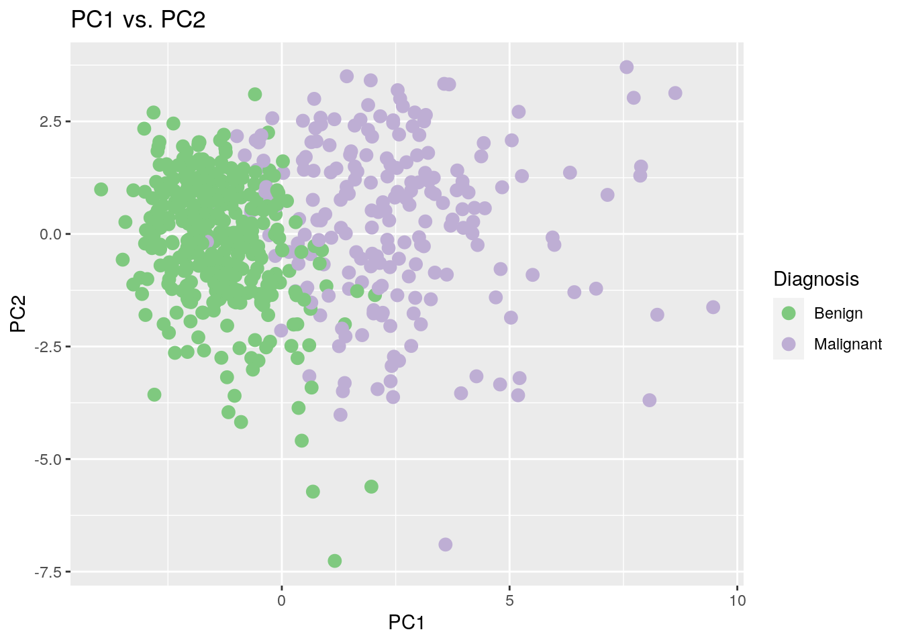
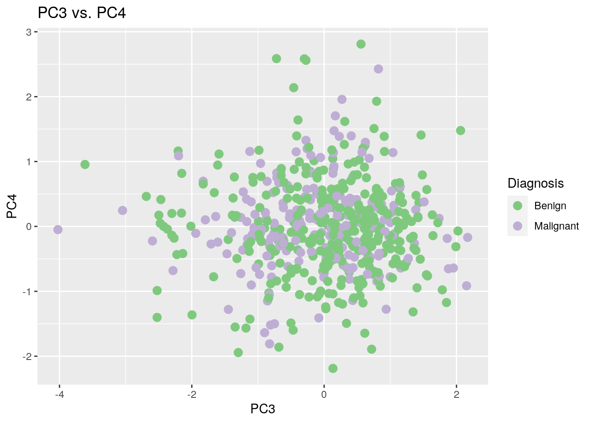

id represents the unique IDs of all the samples. diagnosis classifies the tumors as either benign (B) or malignant (M). This dataset also contains measurements of the mean (mean), standard error (se), and maximum (worst) for each feature, including:radius (mean of distances from center to points on the perimeter)texture (standard deviation of gray-scale values)perimeterareasmoothness (local variation in radius lengths)compactness (perimeter^2 / area - 1.0)concavity (severity of concave portions of the contour)concave_points (number of concave portions of the contour)symmetryfractal_dimension ("coastline approximation" - 1).diagnosis and the mean measurements of these features.library(tidyverse)
library(ggplot2)
library(RColorBrewer)
library(factoextra)# Read in the dataset
breast_cancer = read_csv("/stor/home/yw9497/Website/content/project/WisconsinBreastCancerDatabase.csv")
# Take a glimpse
glimpse(breast_cancer)## Rows: 569
## Columns: 32
## $ id <dbl> 842302, 842517, 84300903, 84348301, 84358402,…
## $ diagnosis <chr> "M", "M", "M", "M", "M", "M", "M", "M", "M", …
## $ radius_mean <dbl> 17.990, 20.570, 19.690, 11.420, 20.290, 12.45…
## $ texture_mean <dbl> 10.38, 17.77, 21.25, 20.38, 14.34, 15.70, 19.…
## $ perimeter_mean <dbl> 122.80, 132.90, 130.00, 77.58, 135.10, 82.57,…
## $ area_mean <dbl> 1001.0, 1326.0, 1203.0, 386.1, 1297.0, 477.1,…
## $ smoothness_mean <dbl> 0.11840, 0.08474, 0.10960, 0.14250, 0.10030, …
## $ compactness_mean <dbl> 0.27760, 0.07864, 0.15990, 0.28390, 0.13280, …
## $ concavity_mean <dbl> 0.30010, 0.08690, 0.19740, 0.24140, 0.19800, …
## $ concave_points_mean <dbl> 0.14710, 0.07017, 0.12790, 0.10520, 0.10430, …
## $ symmetry_mean <dbl> 0.2419, 0.1812, 0.2069, 0.2597, 0.1809, 0.208…
## $ fractal_dimension_mean <dbl> 0.07871, 0.05667, 0.05999, 0.09744, 0.05883, …
## $ radius_se <dbl> 1.0950, 0.5435, 0.7456, 0.4956, 0.7572, 0.334…
## $ texture_se <dbl> 0.9053, 0.7339, 0.7869, 1.1560, 0.7813, 0.890…
## $ perimeter_se <dbl> 8.589, 3.398, 4.585, 3.445, 5.438, 2.217, 3.1…
## $ area_se <dbl> 153.40, 74.08, 94.03, 27.23, 94.44, 27.19, 53…
## $ smoothness_se <dbl> 0.006399, 0.005225, 0.006150, 0.009110, 0.011…
## $ compactness_se <dbl> 0.049040, 0.013080, 0.040060, 0.074580, 0.024…
## $ concavity_se <dbl> 0.05373, 0.01860, 0.03832, 0.05661, 0.05688, …
## $ `concave points_se` <dbl> 0.015870, 0.013400, 0.020580, 0.018670, 0.018…
## $ symmetry_se <dbl> 0.03003, 0.01389, 0.02250, 0.05963, 0.01756, …
## $ fractal_dimension_se <dbl> 0.006193, 0.003532, 0.004571, 0.009208, 0.005…
## $ radius_worst <dbl> 25.38, 24.99, 23.57, 14.91, 22.54, 15.47, 22.…
## $ texture_worst <dbl> 17.33, 23.41, 25.53, 26.50, 16.67, 23.75, 27.…
## $ perimeter_worst <dbl> 184.60, 158.80, 152.50, 98.87, 152.20, 103.40…
## $ area_worst <dbl> 2019.0, 1956.0, 1709.0, 567.7, 1575.0, 741.6,…
## $ smoothness_worst <dbl> 0.1622, 0.1238, 0.1444, 0.2098, 0.1374, 0.179…
## $ compactness_worst <dbl> 0.6656, 0.1866, 0.4245, 0.8663, 0.2050, 0.524…
## $ concavity_worst <dbl> 0.71190, 0.24160, 0.45040, 0.68690, 0.40000, …
## $ `concave points_worst` <dbl> 0.26540, 0.18600, 0.24300, 0.25750, 0.16250, …
## $ symmetry_worst <dbl> 0.4601, 0.2750, 0.3613, 0.6638, 0.2364, 0.398…
## $ fractal_dimension_worst <dbl> 0.11890, 0.08902, 0.08758, 0.17300, 0.07678, …# Make sure `id` is contained in both datasets
breast_cancer_1 = breast_cancer[, 1:16]
breast_cancer_2 = breast_cancer[, c(1, 17:32)]
# Take a glimpse on both datasets
glimpse(breast_cancer_1)## Rows: 569
## Columns: 16
## $ id <dbl> 842302, 842517, 84300903, 84348301, 84358402, …
## $ diagnosis <chr> "M", "M", "M", "M", "M", "M", "M", "M", "M", "…
## $ radius_mean <dbl> 17.990, 20.570, 19.690, 11.420, 20.290, 12.450…
## $ texture_mean <dbl> 10.38, 17.77, 21.25, 20.38, 14.34, 15.70, 19.9…
## $ perimeter_mean <dbl> 122.80, 132.90, 130.00, 77.58, 135.10, 82.57, …
## $ area_mean <dbl> 1001.0, 1326.0, 1203.0, 386.1, 1297.0, 477.1, …
## $ smoothness_mean <dbl> 0.11840, 0.08474, 0.10960, 0.14250, 0.10030, 0…
## $ compactness_mean <dbl> 0.27760, 0.07864, 0.15990, 0.28390, 0.13280, 0…
## $ concavity_mean <dbl> 0.30010, 0.08690, 0.19740, 0.24140, 0.19800, 0…
## $ concave_points_mean <dbl> 0.14710, 0.07017, 0.12790, 0.10520, 0.10430, 0…
## $ symmetry_mean <dbl> 0.2419, 0.1812, 0.2069, 0.2597, 0.1809, 0.2087…
## $ fractal_dimension_mean <dbl> 0.07871, 0.05667, 0.05999, 0.09744, 0.05883, 0…
## $ radius_se <dbl> 1.0950, 0.5435, 0.7456, 0.4956, 0.7572, 0.3345…
## $ texture_se <dbl> 0.9053, 0.7339, 0.7869, 1.1560, 0.7813, 0.8902…
## $ perimeter_se <dbl> 8.589, 3.398, 4.585, 3.445, 5.438, 2.217, 3.18…
## $ area_se <dbl> 153.40, 74.08, 94.03, 27.23, 94.44, 27.19, 53.…glimpse(breast_cancer_2)## Rows: 569
## Columns: 17
## $ id <dbl> 842302, 842517, 84300903, 84348301, 84358402,…
## $ smoothness_se <dbl> 0.006399, 0.005225, 0.006150, 0.009110, 0.011…
## $ compactness_se <dbl> 0.049040, 0.013080, 0.040060, 0.074580, 0.024…
## $ concavity_se <dbl> 0.05373, 0.01860, 0.03832, 0.05661, 0.05688, …
## $ `concave points_se` <dbl> 0.015870, 0.013400, 0.020580, 0.018670, 0.018…
## $ symmetry_se <dbl> 0.03003, 0.01389, 0.02250, 0.05963, 0.01756, …
## $ fractal_dimension_se <dbl> 0.006193, 0.003532, 0.004571, 0.009208, 0.005…
## $ radius_worst <dbl> 25.38, 24.99, 23.57, 14.91, 22.54, 15.47, 22.…
## $ texture_worst <dbl> 17.33, 23.41, 25.53, 26.50, 16.67, 23.75, 27.…
## $ perimeter_worst <dbl> 184.60, 158.80, 152.50, 98.87, 152.20, 103.40…
## $ area_worst <dbl> 2019.0, 1956.0, 1709.0, 567.7, 1575.0, 741.6,…
## $ smoothness_worst <dbl> 0.1622, 0.1238, 0.1444, 0.2098, 0.1374, 0.179…
## $ compactness_worst <dbl> 0.6656, 0.1866, 0.4245, 0.8663, 0.2050, 0.524…
## $ concavity_worst <dbl> 0.71190, 0.24160, 0.45040, 0.68690, 0.40000, …
## $ `concave points_worst` <dbl> 0.26540, 0.18600, 0.24300, 0.25750, 0.16250, …
## $ symmetry_worst <dbl> 0.4601, 0.2750, 0.3613, 0.6638, 0.2364, 0.398…
## $ fractal_dimension_worst <dbl> 0.11890, 0.08902, 0.08758, 0.17300, 0.07678, …# Perform a left join on `breast_cancer_1`, by `id`
breast_cancer_joined = breast_cancer_1 %>% left_join(breast_cancer_2,
by = "id")
# Take a glimpse
glimpse(breast_cancer_joined)## Rows: 569
## Columns: 32
## $ id <dbl> 842302, 842517, 84300903, 84348301, 84358402,…
## $ diagnosis <chr> "M", "M", "M", "M", "M", "M", "M", "M", "M", …
## $ radius_mean <dbl> 17.990, 20.570, 19.690, 11.420, 20.290, 12.45…
## $ texture_mean <dbl> 10.38, 17.77, 21.25, 20.38, 14.34, 15.70, 19.…
## $ perimeter_mean <dbl> 122.80, 132.90, 130.00, 77.58, 135.10, 82.57,…
## $ area_mean <dbl> 1001.0, 1326.0, 1203.0, 386.1, 1297.0, 477.1,…
## $ smoothness_mean <dbl> 0.11840, 0.08474, 0.10960, 0.14250, 0.10030, …
## $ compactness_mean <dbl> 0.27760, 0.07864, 0.15990, 0.28390, 0.13280, …
## $ concavity_mean <dbl> 0.30010, 0.08690, 0.19740, 0.24140, 0.19800, …
## $ concave_points_mean <dbl> 0.14710, 0.07017, 0.12790, 0.10520, 0.10430, …
## $ symmetry_mean <dbl> 0.2419, 0.1812, 0.2069, 0.2597, 0.1809, 0.208…
## $ fractal_dimension_mean <dbl> 0.07871, 0.05667, 0.05999, 0.09744, 0.05883, …
## $ radius_se <dbl> 1.0950, 0.5435, 0.7456, 0.4956, 0.7572, 0.334…
## $ texture_se <dbl> 0.9053, 0.7339, 0.7869, 1.1560, 0.7813, 0.890…
## $ perimeter_se <dbl> 8.589, 3.398, 4.585, 3.445, 5.438, 2.217, 3.1…
## $ area_se <dbl> 153.40, 74.08, 94.03, 27.23, 94.44, 27.19, 53…
## $ smoothness_se <dbl> 0.006399, 0.005225, 0.006150, 0.009110, 0.011…
## $ compactness_se <dbl> 0.049040, 0.013080, 0.040060, 0.074580, 0.024…
## $ concavity_se <dbl> 0.05373, 0.01860, 0.03832, 0.05661, 0.05688, …
## $ `concave points_se` <dbl> 0.015870, 0.013400, 0.020580, 0.018670, 0.018…
## $ symmetry_se <dbl> 0.03003, 0.01389, 0.02250, 0.05963, 0.01756, …
## $ fractal_dimension_se <dbl> 0.006193, 0.003532, 0.004571, 0.009208, 0.005…
## $ radius_worst <dbl> 25.38, 24.99, 23.57, 14.91, 22.54, 15.47, 22.…
## $ texture_worst <dbl> 17.33, 23.41, 25.53, 26.50, 16.67, 23.75, 27.…
## $ perimeter_worst <dbl> 184.60, 158.80, 152.50, 98.87, 152.20, 103.40…
## $ area_worst <dbl> 2019.0, 1956.0, 1709.0, 567.7, 1575.0, 741.6,…
## $ smoothness_worst <dbl> 0.1622, 0.1238, 0.1444, 0.2098, 0.1374, 0.179…
## $ compactness_worst <dbl> 0.6656, 0.1866, 0.4245, 0.8663, 0.2050, 0.524…
## $ concavity_worst <dbl> 0.71190, 0.24160, 0.45040, 0.68690, 0.40000, …
## $ `concave points_worst` <dbl> 0.26540, 0.18600, 0.24300, 0.25750, 0.16250, …
## $ symmetry_worst <dbl> 0.4601, 0.2750, 0.3613, 0.6638, 0.2364, 0.398…
## $ fractal_dimension_worst <dbl> 0.11890, 0.08902, 0.08758, 0.17300, 0.07678, …Since these 2 datasets both contain the exact same values in the id column, no observations will be dropped no matter which type of join (among left/right/inner/full) is used. Here, I chose left join to obtain the same dataset before the splitting.
# Since I decided to not focusing on `se` or
# `worst`, remove those columns
breast_cancer_joined = breast_cancer_joined %>% select(1:12)
# Take a glimpse
glimpse(breast_cancer_joined)## Rows: 569
## Columns: 12
## $ id <dbl> 842302, 842517, 84300903, 84348301, 84358402, …
## $ diagnosis <chr> "M", "M", "M", "M", "M", "M", "M", "M", "M", "…
## $ radius_mean <dbl> 17.990, 20.570, 19.690, 11.420, 20.290, 12.450…
## $ texture_mean <dbl> 10.38, 17.77, 21.25, 20.38, 14.34, 15.70, 19.9…
## $ perimeter_mean <dbl> 122.80, 132.90, 130.00, 77.58, 135.10, 82.57, …
## $ area_mean <dbl> 1001.0, 1326.0, 1203.0, 386.1, 1297.0, 477.1, …
## $ smoothness_mean <dbl> 0.11840, 0.08474, 0.10960, 0.14250, 0.10030, 0…
## $ compactness_mean <dbl> 0.27760, 0.07864, 0.15990, 0.28390, 0.13280, 0…
## $ concavity_mean <dbl> 0.30010, 0.08690, 0.19740, 0.24140, 0.19800, 0…
## $ concave_points_mean <dbl> 0.14710, 0.07017, 0.12790, 0.10520, 0.10430, 0…
## $ symmetry_mean <dbl> 0.2419, 0.1812, 0.2069, 0.2597, 0.1809, 0.2087…
## $ fractal_dimension_mean <dbl> 0.07871, 0.05667, 0.05999, 0.09744, 0.05883, 0…# Calculate the mean for each numeric variables
breast_cancer_stats_all = breast_cancer_joined %>%
select(-c(id, diagnosis)) %>% # Drop the first 2 columns (`id` and `diagnosis`)
summarize_all(c(mean = mean, # Mean
sd = sd, # Standard deviation
percentile = quantile, # Percentile
min = min, # Minimum
max = max)) # Maximum
# Take a glimpse
glimpse(breast_cancer_stats_all)## Rows: 5
## Columns: 50
## $ radius_mean_mean <dbl> 14.12729, 14.12729, 14.12729, 14.12…
## $ texture_mean_mean <dbl> 19.28965, 19.28965, 19.28965, 19.28…
## $ perimeter_mean_mean <dbl> 91.96903, 91.96903, 91.96903, 91.96…
## $ area_mean_mean <dbl> 654.8891, 654.8891, 654.8891, 654.8…
## $ smoothness_mean_mean <dbl> 0.09636028, 0.09636028, 0.09636028,…
## $ compactness_mean_mean <dbl> 0.104341, 0.104341, 0.104341, 0.104…
## $ concavity_mean_mean <dbl> 0.08879932, 0.08879932, 0.08879932,…
## $ concave_points_mean_mean <dbl> 0.04891915, 0.04891915, 0.04891915,…
## $ symmetry_mean_mean <dbl> 0.1811619, 0.1811619, 0.1811619, 0.…
## $ fractal_dimension_mean_mean <dbl> 0.06279761, 0.06279761, 0.06279761,…
## $ radius_mean_sd <dbl> 3.524049, 3.524049, 3.524049, 3.524…
## $ texture_mean_sd <dbl> 4.301036, 4.301036, 4.301036, 4.301…
## $ perimeter_mean_sd <dbl> 24.29898, 24.29898, 24.29898, 24.29…
## $ area_mean_sd <dbl> 351.9141, 351.9141, 351.9141, 351.9…
## $ smoothness_mean_sd <dbl> 0.01406413, 0.01406413, 0.01406413,…
## $ compactness_mean_sd <dbl> 0.05281276, 0.05281276, 0.05281276,…
## $ concavity_mean_sd <dbl> 0.07971981, 0.07971981, 0.07971981,…
## $ concave_points_mean_sd <dbl> 0.03880284, 0.03880284, 0.03880284,…
## $ symmetry_mean_sd <dbl> 0.02741428, 0.02741428, 0.02741428,…
## $ fractal_dimension_mean_sd <dbl> 0.007060363, 0.007060363, 0.0070603…
## $ radius_mean_percentile <dbl> 6.981, 11.700, 13.370, 15.780, 28.1…
## $ texture_mean_percentile <dbl> 9.71, 16.17, 18.84, 21.80, 39.28
## $ perimeter_mean_percentile <dbl> 43.79, 75.17, 86.24, 104.10, 188.50
## $ area_mean_percentile <dbl> 143.5, 420.3, 551.1, 782.7, 2501.0
## $ smoothness_mean_percentile <dbl> 0.05263, 0.08637, 0.09587, 0.10530,…
## $ compactness_mean_percentile <dbl> 0.01938, 0.06492, 0.09263, 0.13040,…
## $ concavity_mean_percentile <dbl> 0.00000, 0.02956, 0.06154, 0.13070,…
## $ concave_points_mean_percentile <dbl> 0.00000, 0.02031, 0.03350, 0.07400,…
## $ symmetry_mean_percentile <dbl> 0.1060, 0.1619, 0.1792, 0.1957, 0.3…
## $ fractal_dimension_mean_percentile <dbl> 0.04996, 0.05770, 0.06154, 0.06612,…
## $ radius_mean_min <dbl> 6.981, 6.981, 6.981, 6.981, 6.981
## $ texture_mean_min <dbl> 9.71, 9.71, 9.71, 9.71, 9.71
## $ perimeter_mean_min <dbl> 43.79, 43.79, 43.79, 43.79, 43.79
## $ area_mean_min <dbl> 143.5, 143.5, 143.5, 143.5, 143.5
## $ smoothness_mean_min <dbl> 0.05263, 0.05263, 0.05263, 0.05263,…
## $ compactness_mean_min <dbl> 0.01938, 0.01938, 0.01938, 0.01938,…
## $ concavity_mean_min <dbl> 0, 0, 0, 0, 0
## $ concave_points_mean_min <dbl> 0, 0, 0, 0, 0
## $ symmetry_mean_min <dbl> 0.106, 0.106, 0.106, 0.106, 0.106
## $ fractal_dimension_mean_min <dbl> 0.04996, 0.04996, 0.04996, 0.04996,…
## $ radius_mean_max <dbl> 28.11, 28.11, 28.11, 28.11, 28.11
## $ texture_mean_max <dbl> 39.28, 39.28, 39.28, 39.28, 39.28
## $ perimeter_mean_max <dbl> 188.5, 188.5, 188.5, 188.5, 188.5
## $ area_mean_max <dbl> 2501, 2501, 2501, 2501, 2501
## $ smoothness_mean_max <dbl> 0.1634, 0.1634, 0.1634, 0.1634, 0.1…
## $ compactness_mean_max <dbl> 0.3454, 0.3454, 0.3454, 0.3454, 0.3…
## $ concavity_mean_max <dbl> 0.4268, 0.4268, 0.4268, 0.4268, 0.4…
## $ concave_points_mean_max <dbl> 0.2012, 0.2012, 0.2012, 0.2012, 0.2…
## $ symmetry_mean_max <dbl> 0.304, 0.304, 0.304, 0.304, 0.304
## $ fractal_dimension_mean_max <dbl> 0.09744, 0.09744, 0.09744, 0.09744,…# Calculate the summary statistics for each numeric variables
breast_cancer_stats_group = breast_cancer_joined %>%
select(-id) %>% # Drop the first column (`id`)
group_by(diagnosis) %>% # Group by `diagnosis`
summarize_all(c(mean = mean, # Mean
sd = sd, # Standard deviation
percentile = quantile, # Percentile
min = min, # Minimum
max = max)) %>% # Maximum
pivot_longer(-diagnosis) %>% # Pivot longer
separate(name, into = c("feature", "stat"),
sep = "_(?=[^_]+$)") %>% # Separate the `name` column
mutate(rn = row_number()) %>% # Add a column of unique identifiers to avoid problems
pivot_wider(names_from = diagnosis, values_from = value) %>% # Pivot wider
select(-rn) # Remove the column of row numbers
# Take a glimpse
glimpse(breast_cancer_stats_group)## Rows: 250
## Columns: 4
## $ feature <chr> "radius_mean", "texture_mean", "perimeter_mean", "area_mean",…
## $ stat <chr> "mean", "mean", "mean", "mean", "mean", "mean", "mean", "mean…
## $ B <dbl> 1.214652e+01, 1.791476e+01, 7.807541e+01, 4.627902e+02, 9.247…
## $ M <dbl> 1.746283e+01, 2.160491e+01, 1.153654e+02, 9.783764e+02, 1.028…radius_mean in ascending orderbreast_cancer_joined_arranged = breast_cancer_joined %>%
arrange(radius_mean)
# Take a glimpse
glimpse(breast_cancer_joined_arranged)## Rows: 569
## Columns: 12
## $ id <dbl> 862722, 921362, 921092, 92751, 85713702, 87100…
## $ diagnosis <chr> "B", "B", "B", "B", "B", "B", "B", "B", "B", "…
## $ radius_mean <dbl> 6.981, 7.691, 7.729, 7.760, 8.196, 8.219, 8.57…
## $ texture_mean <dbl> 13.43, 25.44, 25.49, 24.54, 16.84, 20.70, 13.1…
## $ perimeter_mean <dbl> 43.79, 48.34, 47.98, 47.92, 51.71, 53.27, 54.5…
## $ area_mean <dbl> 143.5, 170.4, 178.8, 181.0, 201.9, 203.9, 221.…
## $ smoothness_mean <dbl> 0.11700, 0.08668, 0.08098, 0.05263, 0.08600, 0…
## $ compactness_mean <dbl> 0.07568, 0.11990, 0.04878, 0.04362, 0.05943, 0…
## $ concavity_mean <dbl> 0.000000, 0.092520, 0.000000, 0.000000, 0.0158…
## $ concave_points_mean <dbl> 0.000000, 0.013640, 0.000000, 0.000000, 0.0059…
## $ symmetry_mean <dbl> 0.1930, 0.2037, 0.1870, 0.1587, 0.1769, 0.2222…
## $ fractal_dimension_mean <dbl> 0.07818, 0.07751, 0.07285, 0.05884, 0.06503, 0…concavity_mean to concave_points_meanbreast_cancer_joined_concave_ratio = breast_cancer_joined %>%
mutate(concave_mean_ratio = concavity_mean/concave_points_mean)
# Take a glimpse
glimpse(breast_cancer_joined_concave_ratio)## Rows: 569
## Columns: 13
## $ id <dbl> 842302, 842517, 84300903, 84348301, 84358402, …
## $ diagnosis <chr> "M", "M", "M", "M", "M", "M", "M", "M", "M", "…
## $ radius_mean <dbl> 17.990, 20.570, 19.690, 11.420, 20.290, 12.450…
## $ texture_mean <dbl> 10.38, 17.77, 21.25, 20.38, 14.34, 15.70, 19.9…
## $ perimeter_mean <dbl> 122.80, 132.90, 130.00, 77.58, 135.10, 82.57, …
## $ area_mean <dbl> 1001.0, 1326.0, 1203.0, 386.1, 1297.0, 477.1, …
## $ smoothness_mean <dbl> 0.11840, 0.08474, 0.10960, 0.14250, 0.10030, 0…
## $ compactness_mean <dbl> 0.27760, 0.07864, 0.15990, 0.28390, 0.13280, 0…
## $ concavity_mean <dbl> 0.30010, 0.08690, 0.19740, 0.24140, 0.19800, 0…
## $ concave_points_mean <dbl> 0.14710, 0.07017, 0.12790, 0.10520, 0.10430, 0…
## $ symmetry_mean <dbl> 0.2419, 0.1812, 0.2069, 0.2597, 0.1809, 0.2087…
## $ fractal_dimension_mean <dbl> 0.07871, 0.05667, 0.05999, 0.09744, 0.05883, 0…
## $ concave_mean_ratio <dbl> 2.0401088, 1.2384210, 1.5433933, 2.2946768, 1.…radius_mean for each categorical variablebreast_cancer_joined %>%
group_by(diagnosis) %>% # Group by `diagnosis`
filter(radius_mean == max(radius_mean)) # Filter for max value in `radius_mean`## # A tibble: 2 x 12
## # Groups: diagnosis [2]
## id diagnosis radius_mean texture_mean perimeter_mean area_mean
## <dbl> <chr> <dbl> <dbl> <dbl> <dbl>
## 1 8.81e6 M 28.1 18.5 188. 2499
## 2 9.14e7 B 17.8 13.2 115. 992.
## # … with 6 more variables: smoothness_mean <dbl>, compactness_mean <dbl>,
## # concavity_mean <dbl>, concave_points_mean <dbl>, symmetry_mean <dbl>,
## # fractal_dimension_mean <dbl># Create a correlation matrix
cormat = breast_cancer_joined %>%
select_if(is.numeric) %>% # Select numeric variables
select(-id) %>% # Remove the `id` column
cor(use = "pair") # Calculate correlations
# Tidy the correlation matrix
tidycor = cormat %>%
as.data.frame %>% # Change a matrix to a dataframe
rownames_to_column("var1") %>% # Copy rownames to a column `var1`
pivot_longer(-1, names_to = "var2", values_to = "correlation") # Pivot longer
# Create a heatmap
tidycor %>%
ggplot(aes(var1, var2, fill = correlation))+
geom_tile() +
scale_fill_gradient2("Correlation", low = "blue", mid = "white",
high = "red") + # Set legend title and colors
geom_text(aes(label = round(correlation, 2)),color = "black",
size = 2) + # Set text size and color
ggtitle("Correlations between Numeric Variables") + # Add a title
theme(axis.text.x = element_text(angle = 45, hjust = 1)) + # Rotate the x labels
xlab("") + # Remove x-axis label
ylab("") + # Remove y-axis label
coord_fixed() # Set it as a square
This heatmap shows the correlation between 2 numeric variables, with red representing a positive correlation, and blue representing a negative one. As shown by the plot, there is an extremely strong, positive, and linear relationship between any pairwise comparisons among radius_mean, perimeter_mean, and area_mean.
# Create a scatterplot between `radius_mean` and `perimeter_mean`
ggplot(breast_cancer_joined, aes(x = radius_mean, y = perimeter_mean)) +
geom_point(aes(color = factor(diagnosis, # Color the dots by diagnosis
labels = c("Benign", "Malignant"))), # Add labels to the factor
size = 2.5) + # Make the dots larger
scale_color_brewer(palette = "Accent") + # Change the default color
geom_smooth(method = "lm", color = "black", se = F) + # Add a trend line
labs(title = "Perimeter Mean vs. Radius Mean", # Add a title
color = "Diagnosis") + # Rename the legend title
scale_x_continuous("Radius Mean", # Rename x-axis label
breaks = seq(6, 28, by = 2)) + # Add more tick marks
scale_y_continuous("Perimeter Mean", # Rename y-axis label
breaks = seq(40, 180, by = 20)) + # Add more tick marks
theme(legend.position = "bottom") # Move legend to the bottom
This scatterplot confirms the strong, positive, and linear relationship between radius_mean and perimeter_mean. This plot also shows that malignant tumors tend to have greater radius_mean and perimeter_mean when compared to benign tumors.
# Create a barplot of `concavity_mean`
ggplot(breast_cancer_joined, aes(x = factor(diagnosis, levels = c("M", "B"),
labels = c("Malignant",
"Benign")),
y = concavity_mean,
fill = factor(diagnosis, # Color the dots by diagnosis
labels = c("Benign",
"Malignant")))) + # Add labels to the factor
scale_fill_brewer(palette = "Accent") + # Change the default color
geom_bar(stat = "summary") + # Plot the mean
geom_errorbar(stat = "summary", width = 0.5) + # Add errorbars
ggtitle("Mean of Concavity Mean by Diagnosis") + # Add a title
xlab("Diagnosis") + # Rename x-axis label
ylab("Mean of Concavity Mean") + # Rename y-axis label
theme(legend.position = "none") # Remove the legend
This braplot shows the mean of the concavity_mean measurements by diagnosis. According to the plot, the mean of concavity_mean is greater for malignant tumors than for benign tumors.
# Drop the `id` column
breast_cancer_num = breast_cancer_joined %>% select(-id) %>%
select_if(is.numeric) %>% # Select all numeric variables
scale # Scale the values
# Set the rownames of `breast_cancer_num` as `id`
rownames(breast_cancer_num) = breast_cancer_joined$id
# Perform PCA
breast_cancer_pca = princomp(breast_cancer_num)
# Summarize the results
summary(breast_cancer_pca, loadings = T)## Importance of components:
## Comp.1 Comp.2 Comp.3 Comp.4 Comp.5
## Standard deviation 2.3385807 1.5856503 0.93758601 0.70578498 0.60982331
## Proportion of Variance 0.5478588 0.2518714 0.08806152 0.04990094 0.03725392
## Cumulative Proportion 0.5478588 0.7997302 0.88779168 0.93769262 0.97494654
## Comp.6 Comp.7 Comp.8 Comp.9
## Standard deviation 0.35202780 0.282744696 0.186623887 0.105431923
## Proportion of Variance 0.01241417 0.008008531 0.003488979 0.001113546
## Cumulative Proportion 0.98736071 0.995369244 0.998858223 0.999971769
## Comp.10
## Standard deviation 1.678719e-02
## Proportion of Variance 2.823059e-05
## Cumulative Proportion 1.000000e+00
##
## Loadings:
## Comp.1 Comp.2 Comp.3 Comp.4 Comp.5 Comp.6 Comp.7 Comp.8
## radius_mean 0.364 0.314 0.124 0.264
## texture_mean 0.154 0.147 -0.951 0.220
## perimeter_mean 0.376 0.285 0.114 0.238
## area_mean 0.364 0.305 0.123 0.332 -0.261 0.145
## smoothness_mean 0.232 -0.402 0.167 -0.108 0.844 0.171
## compactness_mean 0.364 -0.266 -0.186 -0.240 0.804
## concavity_mean 0.396 -0.104 -0.167 -0.313 -0.601 -0.367 0.450
## concave_points_mean 0.418 -0.266 -0.141 -0.851
## symmetry_mean 0.215 -0.368 0.893 -0.113
## fractal_dimension_mean -0.572 -0.114 -0.349 -0.265 0.568 -0.345
## Comp.9 Comp.10
## radius_mean 0.474 0.669
## texture_mean
## perimeter_mean 0.380 -0.740
## area_mean -0.747
## smoothness_mean
## compactness_mean -0.219
## concavity_mean
## concave_points_mean
## symmetry_mean
## fractal_dimension_mean 0.130The top part of the results summarizes the standard deviation, proportion of variance, and cumulative proportion for each PC.
The bottom part summarizes the loadings. PC1 is a general axis. Higher scores on PC1 correspond with greater measurements for all features. Higher scores on PC2 correspond with greater measurements in radius_mean, texture_mean, perimeter_mean, and area_mean, but relatively smaller measurements for other features.
# Calculate the eigenvalues by squaring the standard deviations
eigval = (breast_cancer_pca$sdev) ^ 2
# Proportion of variance explained by each PC
varprop = round(eigval / sum(eigval), 2)
# Create a scree plot
ggplot() +
geom_bar(aes(x = 1 : 10, y = varprop, fill = 1 : 10), stat = "identity") + # Plot the proportion of variance explained by each PC
scale_fill_distiller(palette = "Spectral") + # Change the default color
geom_path(aes(x = 1 : 10, y = varprop)) + # Add an elbow plot
geom_text(aes(x = 1 : 10, y = varprop, label = varprop), vjust = -0.25,
size = 4) + # Add labels
ggtitle("% Variance Explained by Each PC") + # Add a title
scale_x_continuous("PC", # Rename the x-axis title
breaks = 1 : 10) + # Adjust the breaks
scale_y_continuous("% Variance Explained", # Rename the y-axis title
breaks = seq(0, .6, .2), # Adjust the breaks
labels = scales::percent) + # Change y-axis labels to %
theme(legend.position = "none") # Remove the legend
According to the elbow plot, I will keep the first 3 PCs, which will summarize 89% of the total variability.
# Create a dataframe of the first 2 PCs
breast_cancer_pca$loadings[1:10, 1:2] %>% as.data.frame %>%
rownames_to_column %>%
ggplot() + geom_hline(aes(yintercept = 0), lty = 2) + # Plot the loadings
geom_vline(aes(xintercept = 0), lty = 2) +
xlab("PC1") + ylab("PC2") + # Rename the axis titles
geom_segment(aes(x = 0, y = 0, xend = Comp.1, yend = Comp.2), arrow = arrow(),
col = "steelblue") + # Add arrows
geom_label(aes(x = Comp.1 * 1.2, y = Comp.2 * 1.2, label = rowname)) # Add labels
In a loadings plot, the angle between 2 vectors represents the correlation between the 2 variables. In this loadings plot, the labels for radius_mean, perimeter_mean, and area_meanare overlapping each other. This is expected because these 3 variables are strongly correlated with each other.
fviz_pca_biplot(breast_cancer_pca, col.ind = "gray")
This biplot combines the previous loadings plot with PC scores of all samples.
results = breast_cancer_joined %>%
# Add the first 4 PCs
mutate(PC1 = breast_cancer_pca$scores[, 1],
PC2 = breast_cancer_pca$scores[, 2],
PC3 = breast_cancer_pca$scores[, 3],
PC4 = breast_cancer_pca$scores[, 4])
# Create a scatterplot of PC1 vs. PC2
results %>% ggplot(aes(x = PC1, y = PC2)) +
geom_point(aes(color = factor(diagnosis, # Color the dots by `diagnosis`
labels = c("Benign", "Malignant"))), # Add labels to the legend
size = 3) + # Make the dots larger
scale_color_brewer(palette = "Accent") + # Change the colors
labs(title = "PC1 vs. PC2", # Add a title
color = "Diagnosis") # Rename the legend title
# Create a scatterplot of PC3 vs. PC4
results %>% ggplot(aes(x = PC3, y = PC4)) +
geom_point(aes(color = factor(diagnosis, # Color the dots by `diagnosis`
labels = c("Benign", "Malignant"))), # Add labels to the legend
size = 3) + # Make the dots larger
scale_color_brewer(palette = "Accent") + # Change the colors
labs(title = "PC3 vs. PC4", # Add a title
color = "Diagnosis") # Rename the legend title
These 2 scatterplots plot the PC scores of the samples. In the scatterplots, we can see that PC1 separates the malignant and benign tumors. However, PCs 2-4 all fail to separate the 2 types of tumors.
## R version 3.6.1 (2019-07-05)
## Platform: x86_64-pc-linux-gnu (64-bit)
## Running under: Ubuntu 18.04.5 LTS
##
## Matrix products: default
## BLAS: /stor/system/opt/R/R-3.6.1/lib/R/lib/libRblas.so
## LAPACK: /stor/system/opt/R/R-3.6.1/lib/R/lib/libRlapack.so
##
## locale:
## [1] LC_CTYPE=en_US.UTF-8 LC_NUMERIC=C
## [3] LC_TIME=en_US.UTF-8 LC_COLLATE=en_US.UTF-8
## [5] LC_MONETARY=en_US.UTF-8 LC_MESSAGES=en_US.UTF-8
## [7] LC_PAPER=en_US.UTF-8 LC_NAME=C
## [9] LC_ADDRESS=C LC_TELEPHONE=C
## [11] LC_MEASUREMENT=en_US.UTF-8 LC_IDENTIFICATION=C
##
## attached base packages:
## [1] stats graphics grDevices utils datasets methods base
##
## other attached packages:
## [1] factoextra_1.0.7 RColorBrewer_1.1-2 forcats_0.5.0 stringr_1.4.0
## [5] dplyr_1.0.1 purrr_0.3.4 readr_1.3.1 tidyr_1.1.1
## [9] tibble_3.0.3 ggplot2_3.3.2 tidyverse_1.3.0
##
## loaded via a namespace (and not attached):
## [1] httr_1.4.2 jsonlite_1.7.0 splines_3.6.1 carData_3.0-4
## [5] modelr_0.1.8 assertthat_0.2.1 blob_1.2.1 cellranger_1.1.0
## [9] yaml_2.2.1 ggrepel_0.8.2 pillar_1.4.6 backports_1.1.8
## [13] lattice_0.20-41 glue_1.4.2 digest_0.6.25 ggsignif_0.6.0
## [17] rvest_0.3.6 colorspace_1.4-1 htmltools_0.5.0 Matrix_1.2-17
## [21] pkgconfig_2.0.3 broom_0.7.0 haven_2.3.1 bookdown_0.20
## [25] scales_1.1.1 openxlsx_4.1.5 rio_0.5.16 mgcv_1.8-31
## [29] generics_0.0.2 farver_2.0.3 car_3.0-8 ellipsis_0.3.1
## [33] ggpubr_0.4.0 withr_2.2.0 cli_2.0.2 magrittr_1.5
## [37] crayon_1.3.4 readxl_1.3.1 evaluate_0.14 fs_1.5.0
## [41] fansi_0.4.1 nlme_3.1-148 rstatix_0.6.0 xml2_1.3.2
## [45] foreign_0.8-71 blogdown_0.20 tools_3.6.1 data.table_1.13.0
## [49] hms_0.5.3 formatR_1.7 lifecycle_0.2.0 munsell_0.5.0
## [53] reprex_0.3.0 zip_2.1.0 compiler_3.6.1 rlang_0.4.7
## [57] grid_3.6.1 rstudioapi_0.11 labeling_0.3 rmarkdown_2.3
## [61] gtable_0.3.0 abind_1.4-5 DBI_1.1.0 curl_4.3
## [65] R6_2.4.1 lubridate_1.7.9 knitr_1.29 utf8_1.1.4
## [69] stringi_1.5.3 Rcpp_1.0.5 vctrs_0.3.2 dbplyr_1.4.4
## [73] tidyselect_1.1.0 xfun_0.16## [1] "2020-12-05 14:00:09 CST"## sysname
## "Linux"
## release
## "4.15.0-117-generic"
## version
## "#118-Ubuntu SMP Fri Sep 4 20:02:41 UTC 2020"
## nodename
## "educcomp01.ccbb.utexas.edu"
## machine
## "x86_64"
## login
## "unknown"
## user
## "yw9497"
## effective_user
## "yw9497"